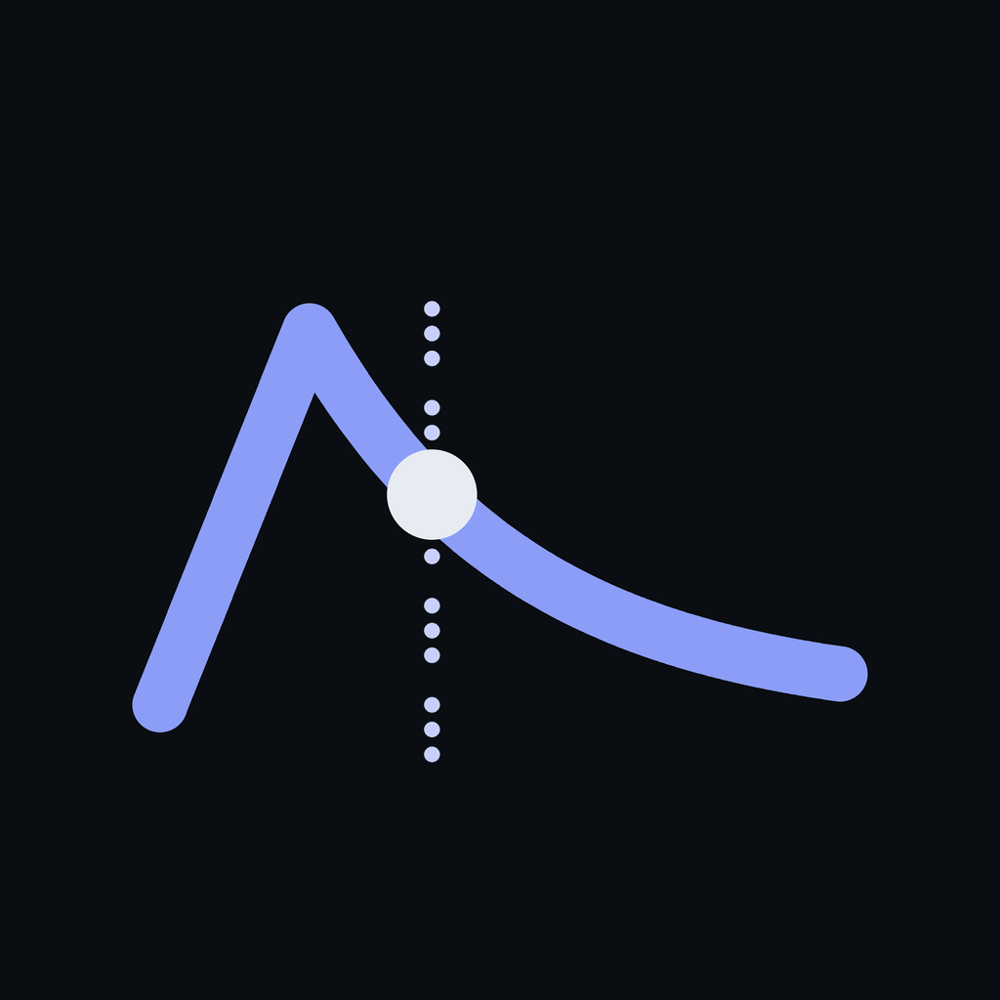
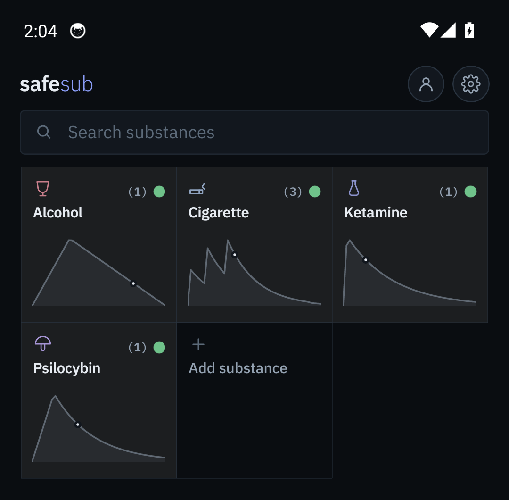
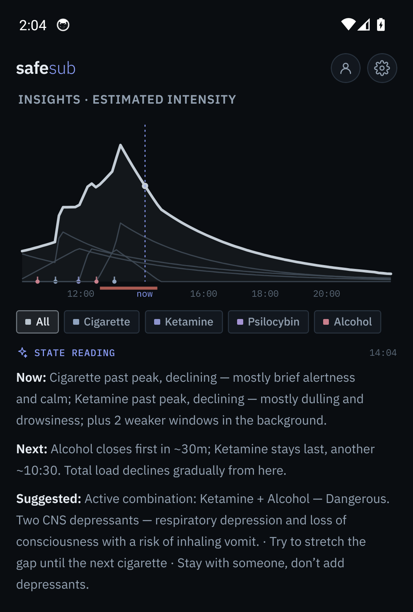

מה פעיל בגוף שלך עכשיו — עקומות עלייה/שיא/דעיכה, והתרעה על חפיפות מסוכנות בין חומרים. לצמצום נזקים, לא לעידוד שימוש ולא לגמילה.
צילומי מסך מהגרסה האנגלית של האפליקציה


גרסת בטא ראשונית. ה-APK חתום ב-debug keystore ולא במפתח production — אנדרואיד יציג אזהרת "מקור לא מוכר" בהתקנה; זה צפוי בשלב זה, לא באג. יש לאפשר התקנה ממקורות לא ידועים כדי להתקין.
לעולם לא מציגה מינונים, לוחות שימוש חוזר או הוראות הכנה — רק תזמון וחפיפות.
לא ייעוץ רפואי. הפניה תמיד זמינה לעזרה אנושית — מד״א 101, ער״ן 1201.
כל מספר הוא הערכה מהספרות, לא מדידה — שונות בין-אישית מוצגת בגלוי.
פרטיות בברירת מחדל: הנתונים על המכשיר בלבד, אין חשבון, אין ענן.